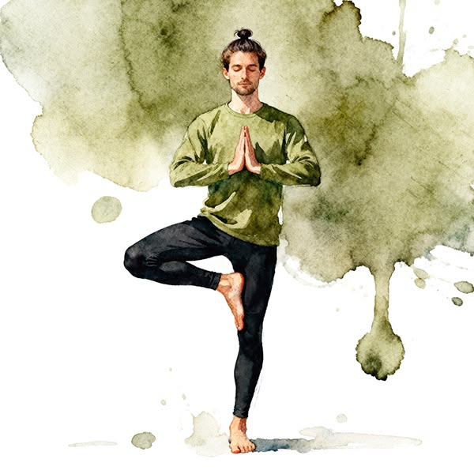

Yoga Foundations
Theory, anatomy, benefits, and contraindications.
This page documents my yoga learning journey from beginner to advanced levels. Explore yoga theory, step-by-step practice instructions, breathing techniques, warm-ups, Surya Namaskara variations, Vinyasa flows, anatomy notes, benefits, contraindications, and personal observations.
Explore the learning library
Learn with care. Practice with awareness.Move from foundations to mindful movement, one topic at a time.
Theory, anatomy, benefits, and contraindications.
Step-by-step poses, warm-ups, and breathing techniques.
Surya Namaskara, Vinyasa flows, and personal observations.
Start with the basics and build understanding at your own pace. Connect yoga theory with mindful practice, notice how breath and movement work together, and keep personal observations as your knowledge develops from beginner to advanced.
“Learn with curiosity. Practice with awareness. Reflect on what you discover.” A note for the journey